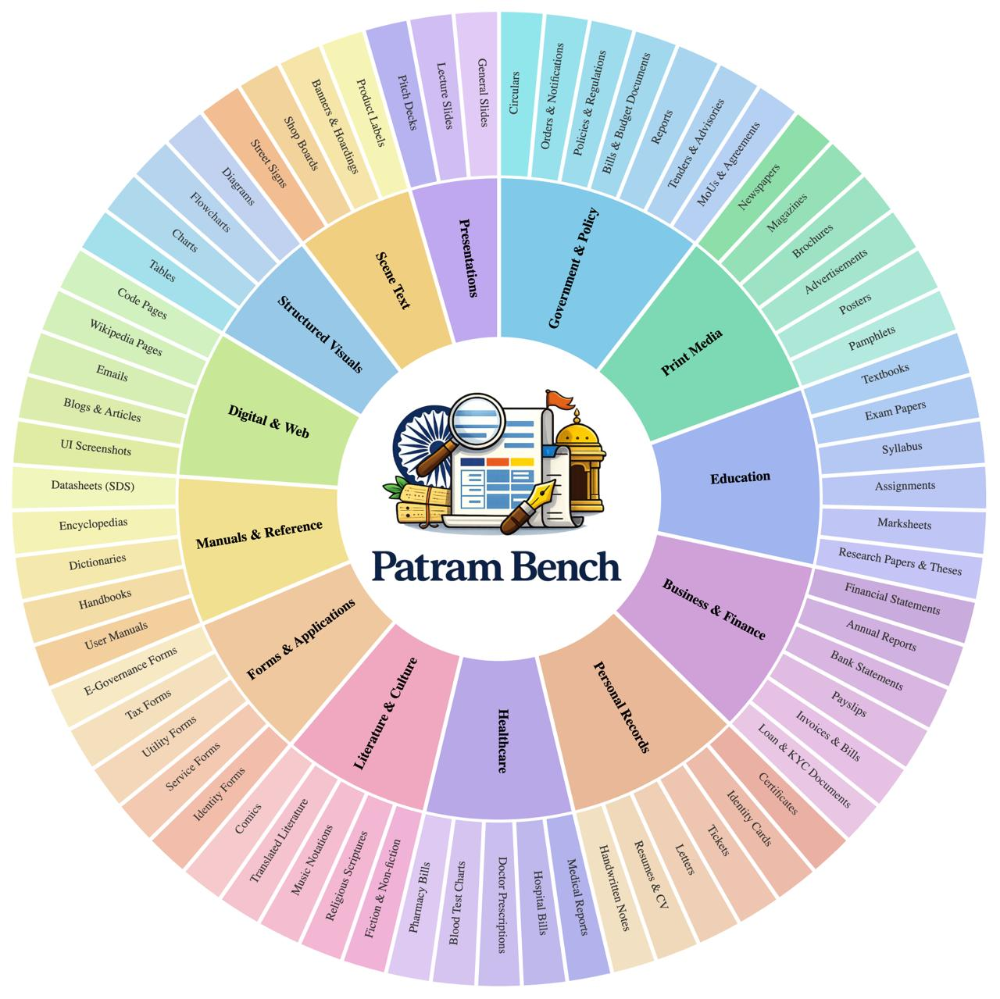
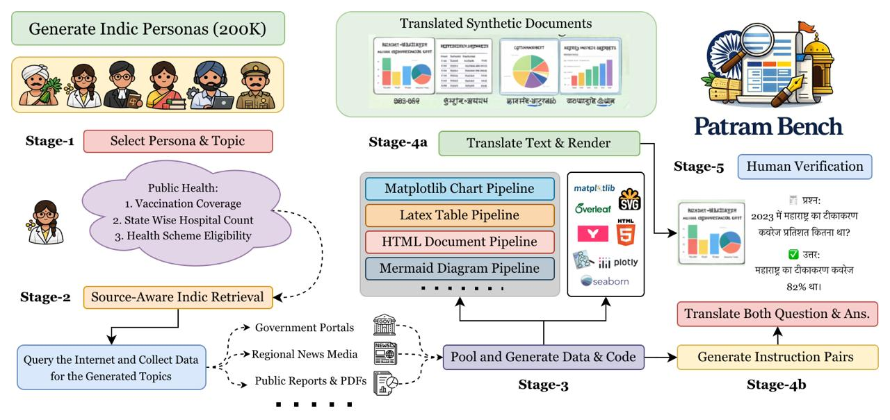
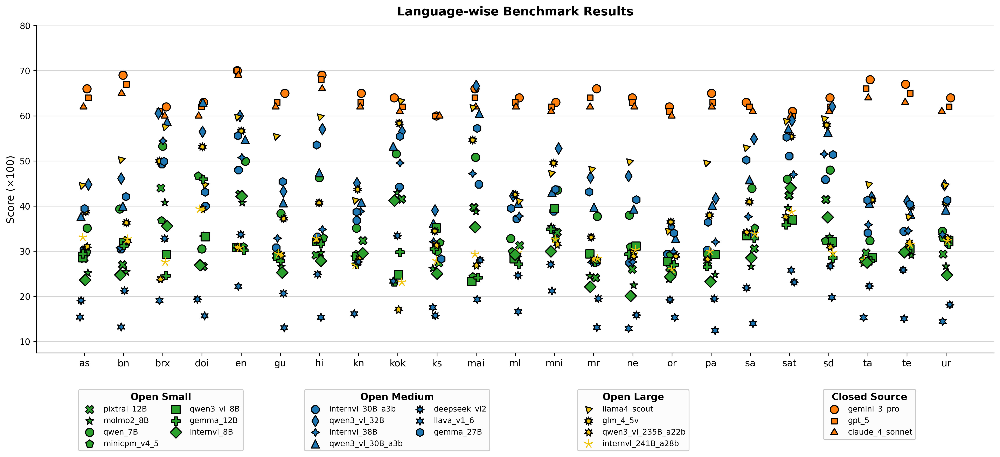
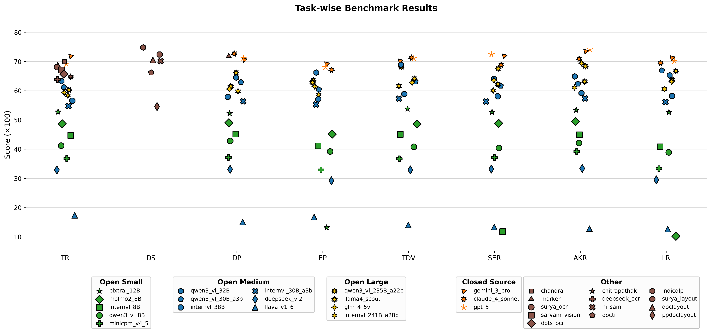

With over 1.4 billion people and dozens of widely used scripts, India represents one of the world’s most linguistically and visually diverse document ecosystems. Yet document understanding benchmarks remain largely Western- and English-centric. Consequently, the robustness of modern vision–language models (VLMs) in multilingual and low-resource settings remains under-evaluated.
We introduce the first large-scale multilingual benchmark for Indian document understanding, comprising 52,607 documents across 23 languages, 13 domains, 71 document classes, and 52 tasks, with over 2.4M QA annotations across multiple tasks. The dataset captures diverse layouts, scripts, and visual conditions spanning governance, education, finance, archival, and informal content, among others. We additionally include synthetic multilingual charts, tables, and diagrams generated via Patram-Syn, an Indian persona-driven data generation pipeline with human validation.
The benchmark measures perception-level capabilities such as OCR, parsing, key information extraction, and layout detection, as well as reasoning-level capabilities including Document VQA with abstractive, multi-hop, and ambiguous questions. We further introduce targeted settings for cross-lingual, transliterated, and code-mixed VQA. We also propose two new evaluation metrics, Document Understanding Cross-Lingual Index (DUCLI) and Script Robustness Score (SRS), to quantify cross-lingual reasoning degradation and script robustness. Our benchmark exposes consistent weaknesses in both open-source and closed-source VLMs, particularly in low-resource languages, degraded scans, and layout-intensive settings, underscoring fundamental challenges in scalable multilingual document intelligence.
A hybrid curation strategy combining native Indian documents and persona-driven synthetic data.
We curate a large-scale corpus of Indian PDF documents reflecting real-world document ecosystems. Our sources span official governance portals, educational boards, listing corporations, and archival databases:

Document domain and class distribution: Spans 13 domains and 71 document classes.

Patram-Syn overview: A five-stage persona-driven generation pipeline.
To evaluate VLM performance under strict layout controls, we introduce Patram-Syn, a persona-driven synthetic data generation pipeline. By conditioning content on 200,000 synthesized Indian personas, we produce realistic and culturally grounded tables, diagrams, and charts.
Generates content conditioned on roles like educators, public health officers, and accountants.
Retrieves background information from public Indian databases to keep visual assets factual.
Outputs plotting code in Matplotlib (charts), LaTeX (tables), and Mermaid (diagrams) for Indic fonts.
A team of 14 native-speaker experts reviews the layout, script rendering, and QA annotations.
Patram-Bench covers 52 distinct document understanding tasks spanning perception and reasoning.
Evaluates visual and structural feature extraction. Includes handwritten and printed OCR, multi-column layout detection, table cell localization, chart parsing, and PDF-to-Markdown document parsing.
Tests cognitive document understanding. Includes multi-hop Document VQA, abstractive reasoning, arithmetic parsing on charts, and structural reasoning over diagrams. Evaluates cross-lingual transfer, code-mixed, and transliterated queries.

Task taxonomy: Evaluation axes across OCR, segmentation, parsing, and multi-lingual VQA.
Large-scale unified evaluation of 29 vision-language models and specialized document processors.
Performance comparison across English (en), five high-resource Indic languages (hi, bn, te, ta, mr), and five low-resource Indic languages (mni, sat, sd, ks, kok).
| Model | en | hi | bn | te | ta | mr | mni | sat | sd | ks | kok | Overall |
|---|---|---|---|---|---|---|---|---|---|---|---|---|
| Closed Source VLMs | ||||||||||||
| GPT-5 | 82 | 79 | 77 | 76 | 75 | 76 | 62 | 50 | 48 | 72 | 67 | 70 |
| Gemini-3-Pro | 74 | 69 | 66 | 66 | 65 | 66 | 56 | 43 | 41 | 60 | 58 | 61 |
| Claude-4.0-Sonnet | 71 | 67 | 63 | 64 | 63 | 64 | 55 | 46 | 42 | 59 | 57 | 61 |
| Open Source VLMs - Large (> 100B) | ||||||||||||
| Qwen3-VL-235B-A22B | 75 | 71 | 69 | 70 | 69 | 70 | 61 | 48 | 46 | 62 | 60 | 64 |
| InternVL3.5-241B-A28B | 71 | 67 | 65 | 66 | 65 | 66 | 54 | 43 | 41 | 58 | 56 | 60 |

RQ2 Analysis: Performance degradation as language resources drop. Closed-source models (orange) exhibit stability, whereas open-source models show sharp drops in low-resource Indic languages.

RQ1 Analysis: Model comparison across 8 document families. Gaps are wide in document parsing (DP) and linguistic robustness (LR), with specialist models outperforming general VLMs on layout and text detection.
| Type | TR | DS | DP | EP | TDV | SER | AKR | LR |
|---|---|---|---|---|---|---|---|---|
| Best | G3P | iDLP | C4S | G3P | C4S | GPT5 | GPT5 | G3P |
| Best OS | Chan | iDLP | Mrkr | QW32 | QW32 | QW235 | GLM4 | QW30 |
| Worst | LLaVA | PPDoc | LLaVA | Pix12 | LLaVA | IVL8 | LLaVA | Mol8 |
TR: Text Recognition, DS: Document Segmentation, DP: Document Parsing, EP: Element Parsing | TDV: Text-Centric DocVQA, SER: Structured Element Reasoning, AKR: Analytical/Knowledge Reasoning, LR: Linguistic Robustness.
| Metric | Best Closed | Best Open-Source | Worst |
|---|---|---|---|
| DUCLI | Claude-4-Sonnet | Gemma-3-12B | LLaVA-1.6 |
| SRS | Gemini-3-Pro | Gemma-3-12B | Pixtral-12B |
DUCLI: Measures retention relative to monolingual English.
SRS: Measures invariance to code-mixing and transliteration.
Evaluating models where question and document languages differ (High-Resource vs Low-Resource Indic).
| Model | English Doc | Indic Doc | ||||||
|---|---|---|---|---|---|---|---|---|
| Q: EN | Q: HR | Q: LR | Q: EN | Same-HR | Same-LR | Diff-HR | Diff-LR | |
| Gemma-27B | 0.323 | 0.327 | 0.337 | 0.193 | 0.211 | 0.161 | 0.181 | 0.190 |
| Qwen3-VL-32B | 0.289 | 0.272 | 0.289 | 0.197 | 0.169 | 0.143 | 0.143 | 0.138 |
| LLaMA-4 Scout | 0.288 | 0.279 | 0.284 | 0.184 | 0.213 | 0.173 | 0.166 | 0.175 |
| Qwen3-VL-30B | 0.273 | 0.226 | 0.237 | 0.188 | 0.161 | 0.159 | 0.133 | 0.128 |
| InternVL-38B | 0.194 | 0.181 | 0.186 | 0.075 | 0.054 | 0.064 | 0.075 | 0.077 |
| Pixtral-12B | 0.183 | 0.171 | 0.174 | 0.081 | 0.049 | 0.068 | 0.077 | 0.067 |
| LLaVA-v1.6 | 0.112 | 0.079 | 0.066 | 0.054 | 0.032 | 0.056 | 0.042 | 0.031 |
| Type | Model Ordering (Lower is better visual reliance) |
|---|---|
| Best Closed | Gemini-3-Pro > Claude-4-Sonnet |
| Best Open | Qwen3-VL-32B > Qwen3-VL-30B > Gemma-3-27B |
| Worst (Bias-heavy) | Qwen3-VL-235B > InternVL3.5-241B |
Linguistic bias indicates models relying on text priors to answer, bypassing document visuals.
If you find our work or dataset useful in your research, please consider citing:
@inproceedings{patrambench2026,
title = {Patram-Bench: A Multi-task, Multi-domain and Multi-lingual Benchmark for Indian Document Image Understanding},
author = {Srinivasan, Anirudh and Jena, Pratyush and Topale, Arya and Venna, Venkat and Sarvadevabhatla, Ravi Kiran},
booktitle = {Proceedings of the International Conference on Document Analysis and Recognition (ICDAR)},
year = {2026},
}